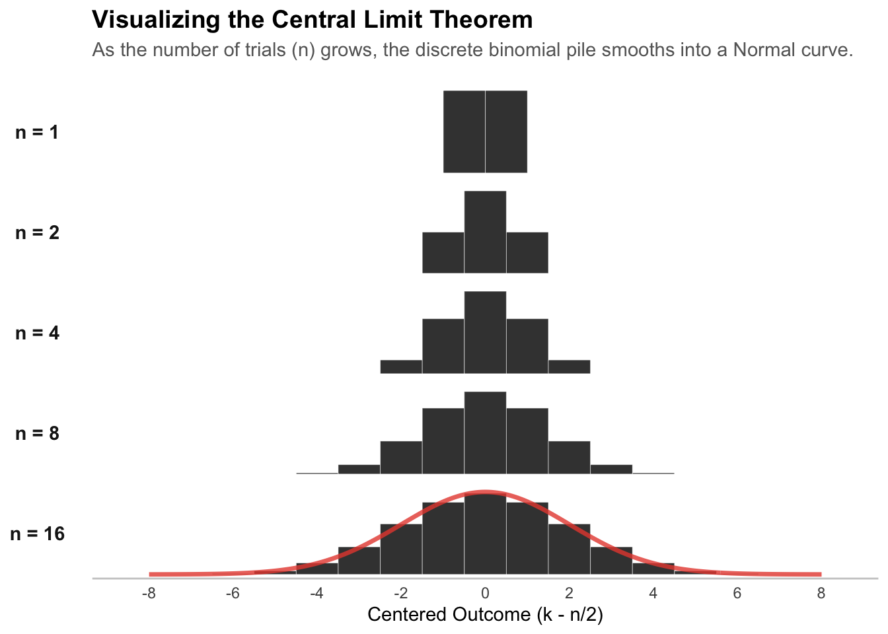
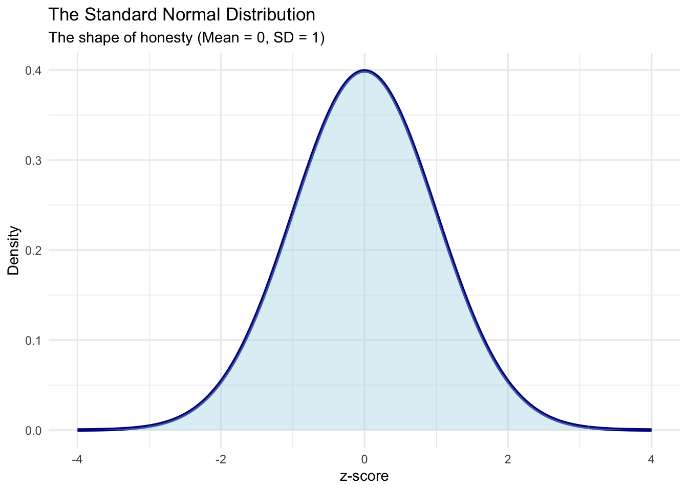
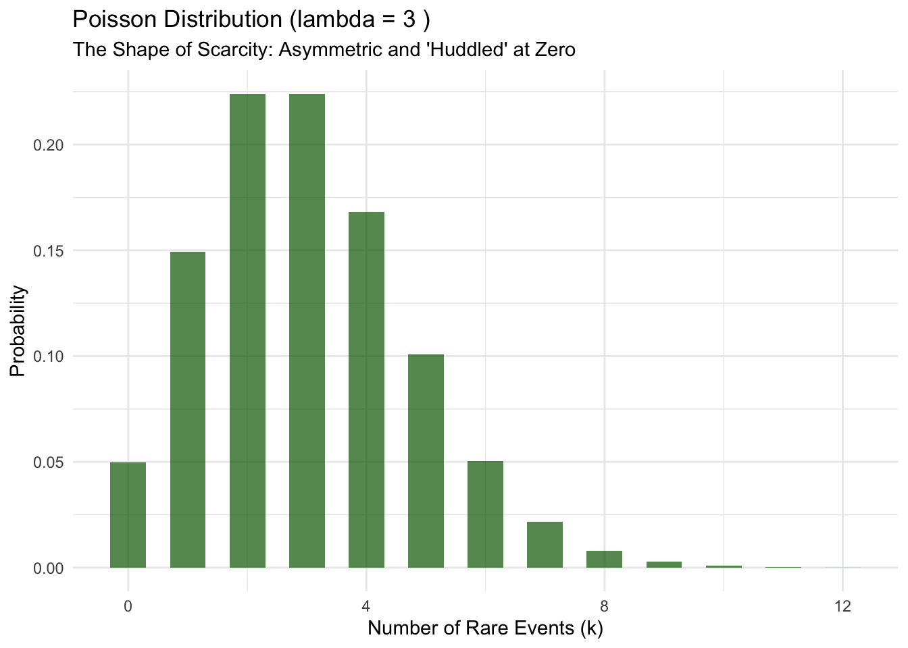
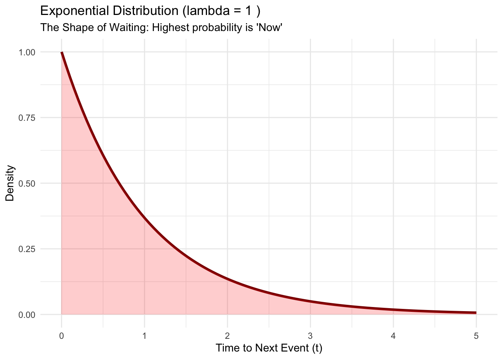

1. The Binary Choice to Normal Distribution
The Binary Choice:
From Dust to Distributions
“Adulthood is the moment you realize no one else is choosing for you.”
Our early lives are surrounded by choices, yet we rarely make them alone. Before we become adults, our decisions of what to eat, what to learn, where to live are not truly critical. We are guided by guardians, parents, and teachers who act as our safety net. They make the “good choices” for us, and more importantly, they take responsibility for the outcomes. We stand in front of a transferring door—like the platform in Harry Potter—and we make that last selection with our guardians: to go to college, to leave home, to step into the new era. But once we cross that threshold, the safety net vanishes. To live as a grown-up is to make responsible decisions for oneself, and eventually for one’s family and neighbors.
We enter a world where legal guardians no longer exist to absorb the cost of our mistakes. In this “World of the Grown-Up,” the ability to make a strategic selection under uncertainty is not just a skill; it is survival. This is why we learn Statistics and Economics. They are not merely academic subjects for getting a job; they are the new guidance system for making good decisions even if they aren’t always the optimal ones in a life full of noise and risk. To understand the logic of this decision-making, we must understand the structure of how decision has been made which lay behind. To look into what is behind, now, I start this story with the very first choice in the history of the universe that had made.
The Bernoulli Trial
Imagine the universe at the very beginning. It is a blank canvas where anything is possible. But for life to actually start, that endless possibility has to narrow down to a single, sharp moment. Think about the first primitive cell. It doesn’t matter how it got there. The moment it exists, it faces the simplest question in the world: Will I survive, or not?
There is no “maybe.” There is no “halfway.” It is a simple switch. In statistics, we call this switch the Bernoulli Trial. It is the atom of probability. It takes the messy, infinite world and cuts it down to a simple “Yes” (1) or “No” (0). You are either fully alive, or you are not.”
The Bernoulli PMF
The probability mass function (PMF) for a single Bernoulli trial is the foundation of all discrete probability.
\[ P(X=k) = p^k (1-p)^{1-k} \quad \text{for } k \in \{0,1\} \]
- \(k\): The outcome (1 for success, 0 for failure).
- \(p\): The probability of success.
The expectation (mean) is simply \(E[X] = p\), and the variance is \(Var(X) = p(1-p)\). This variance formula is crucial because it implies that uncertainty is highest when \(p=0.5\) (maximum confusion) and vanishes as \(p\) approaches 0 or 1 (certainty).
The Binomial Distribution
Time passes, and the solitary struggle evolves into a collective crusade. The primitive organism does not just survive; it strives to persist beyond its own lifespan. It copies itself, splitting and sharing its genetic code in a desperate bid to cheat death. This is the first rule of evolution: transmission. But nature is a harsh filter, and not every copy survives the transfer. Some offspring carry the torch; others are extinguished by the cold indifference of the environment. Now, we are no longer watching a single creature flip a coin against fate. We are watching a generation. Imagine one hundred of these descendants, all carrying the same fragile hope, all facing the same binary test. The question shifts from the specific to the aggregate. We stop asking, “Did this one survive?” and start asking, “How many made it through?” This variation is vital. If fate were uniform—if every single offspring faced the exact same outcome—it would be a tragedy. If the coin landed on “Death” (0) for everyone at once, the lineage would vanish in a single generation. Even if everyone survived (1), life would lack the pressure to adapt.
But reality avoids these extremes because of a simple numerical truth: Being extreme is hard; being average is easy.
To get a result of zero survivors, every single coin flip has to land on “Death.” There is only one way for that to happen. Similarly, to get 100% survival, everyone has to land on “Life.” That is also extremely rare because everything has to go perfectly. But getting a result in the middle—say, 50 survivors—is easy. You could have the first 50 survive, or the last 50, or every other person. There are billions of different ways to get a mixed result. The “Average” isn’t a magical target. It is simply the destination with the most roads leading to it. Because there are so many more ways to end up in the middle, the results naturally cluster there. This clustering is what we call the Binomial Distribution.
The Core of the Cluster (nCk)
The Binomial distribution formula reveals exactly why this “Cluster” exists.
\[ P(X=k) = \binom{n}{k} p^k (1-p)^{n-k} \]
- The Probabilities (\(p^k...\)): These terms handle the likelihood of specific events (heads vs. tails).
- The Coefficient \(\binom{n}{k}\): This is the “n choose k” term. It counts the combinations—the number of different storylines that lead to the same result.
Why the Bell Curve forms: * \(\binom{100}{0} = 1\) (Only 1 way to have 0 survivors). * \(\binom{100}{50} \approx 10^{29}\) (There are \(100,000,000,000,000,000,000,000,000,000\) ways to have 50 survivors).
The coefficient \(\binom{n}{k}\) is the weight of the crowd. It physically forces the probability mass to cluster in the center, creating the “Bell Shape” long before we even calculate a mean.
This logic works perfectly for a small group. But as the population grows from a few hundred to millions, we face a new problem: the blindness of scale. When we observe a small village of 100 people, we can perhaps track every story—who lived, who died, who succeeded. But in a modern society like the United States, with over 330 million souls, the sheer volume of data overwhelms us. The detailed biography of every single individual becomes useless noise; we cannot read 330 million binary codes.
To make sense of this massive crowd, the social scientist must abandon the individual biography and embrace the summary. We narrow our focus to the only two signals that remain visible from such a distance. We ask where the crowd is centered—the Mean—to understand if the group is generally surviving. Then, we look for the chaos within that group—the Variance—to determine if everyone shares a similar fate or if the outcomes are drifting wildly apart. Before we move to the next section, let us verify this visually. The figure below demonstrates how the combinatorial weight of the middle smooths out the jagged steps of the individual into a perfect curve.
the Factorial
You might be wondering: How exactly does a jagged pile of blocks turn into a smooth curve?The answer lies in the “Combinatorial Engine” we just used: the factorial (\(n!\)). If you try to calculate the number of combinations for a large tribe—say, \(n=100\) coin flips—the numbers become impossibly large. The number of permutations (\(100!\)) has 158 digits. It is a mathematical monster that creates a “Combinatorial Explosion.”In the 18th century, Abraham de Moivre faced this monster. He realized that calculating these exact odds for gamblers was impossible. But he discovered a secret hidden inside the growth of the factorial. He found that as \(n\) gets large, the factorial function (\(n!\)) stops behaving like a discrete multiplication problem and starts behaving like a continuous exponential function.This is famously known as Stirling’s Approximation (though De Moivre did the heavy lifting). He proved that:\[n! \approx \sqrt{2\pi n} \left(\frac{n}{e}\right)^n\]. This formula is the “Bridge.” It transforms the jagged, discrete integer math of counting (\(n!\)) into the smooth, continuous geometry of circles (\(\pi\)) and growth (\(e\)).When De Moivre plugged this approximation back into the Binomial formula, the massive factorials canceled each other out. The complex combinatorics melted away, leaving behind a single, elegant term that describes how the probability drops off as you move away from the center:\[e^{-x^2}\]This is the mathematical heartbeat of the Central Limit Theorem. It proves that if you have enough events, the “Combinatorial Explosion” of discrete choices inevitably smooths itself out into the exponential curve of the Normal Distribution.Now that we know why the pile becomes smooth, we are ready to name it.
The Normal Distribution
We have reduced the massive complexity of the world down to just two numbers: the Mean (the center) and the Variance (the spread). But as social scientists, we often need more than just a summary; we need to visualize the whole population. We need to draw the shape of the crowd. This leads to a difficult question: If you only know the center and the spread, what shape should you draw?
You could draw a flat rectangular box. You could draw a sharp triangle. All of these shapes could have the correct mean and variance. But if you draw a triangle, you are adding sharp corners that you have no evidence for. If you draw a box, you are assuming a hard cutoff that might not exist. You are effectively “lying” by adding details that aren’t in your data. To be honest researchers, we want the shape that fits our two numbers (Mean and Variance) but assumes absolutely nothing else. We want the shape that is as random and smooth as possible, maximizing our uncertainty about the details we don’t know. In physics and information theory, this is called the Principle of Maximum Entropy. It is the mathematical definition of honesty. It turns out, there is only one shape in the universe that satisfies this principle for a fixed mean and variance. That shape is the Normal Distribution (the Gaussian).
The Gaussian PDF
The Probability Density Function (PDF) of the Normal distribution is defined entirely by two parameters: the mean (\(\mu\)) and the standard deviation (\(\sigma\)).
\[ f(x) = \frac{1}{\sigma\sqrt{2\pi}} e^{ -\frac{1}{2}\left(\frac{x-\mu}{\sigma}\right)^2 } \]
- \(\mu\): The center of the pile (Mean).
- \(\sigma\): The spread of the pile (Standard Deviation).
- \(e^{-x^2}\): The exponential decay that creates the famous bell slope.
- \(\frac{1}{\sqrt{2\pi}}\): The normalization constant required to make the total area under the curve equal to 1.
Show Code
library(ggplot2)
# Define the range
x_vals <- seq(-4, 4, length.out = 1000)
# Calculate the density for Standard Normal (mean=0, sd=1)
y_vals <- dnorm(x_vals, mean = 0, sd = 1)
df <- data.frame(x = x_vals, y = y_vals)
# Plot
ggplot(df, aes(x, y)) +
geom_line(color = "darkblue", linewidth = 1.2) +
geom_area(fill = "lightblue", alpha = 0.4) +
labs(title = "The Standard Normal Distribution",
subtitle = "The shape of honesty (Mean = 0, SD = 1)",
x = "z-score", y = "Density") +
theme_minimal()
The Cousins of Normal distribution
We have spent this entire chapter building a shrine to the Normal Distribution. We called it “The Honest Shape” because it gives us freedom. It allows us to control the two most important levers of life separately: the Mean (Expected Reward) and the Variance (Risk). In a Normal world, you can have a rich country (High Mean) that is either equal (Low Variance) or unequal (High Variance). The two moments are free to move independently.
But nature is not always so generous. Sometimes, the question changes. We stop asking “How many successes in a crowded room?” and start asking questions about scarcity and time.
In these corners of reality, the Mean and Variance lose their divorce. They become locked together. The Cousins of the Normal Distribution arise when the binary choice evolves under these stricter constraints.
The Rarity: Poisson (The One-Knob World)
Imagine looking for a specific genetic mutation in a sea of DNA, or counting shooting stars in a dark sky. The opportunities for an event are nearly infinite (\(n \to \infty\)), but the chance of success is nearly zero (\(p \to 0\)).
If you used the Normal distribution here, it would fail (it allows for negative stars). Instead, the Binomial evolves into the Poisson Distribution.
In this world of scarcity, you lose your freedom. You have only one knob. In the Poisson distribution, the Mean and the Variance are physically identical (\(\mu = \sigma^2 = \lambda\)). This means you cannot separate “Risk” from “Return.” If you want to find more rare stars (increase the Mean), the chaos of your search (Variance) must increase by the exact same amount.
Mathematical Note & Code: Deriving the Poisson
The Poisson is not a separate species; it is the Binomial on a diet. We derive it by taking the limit of the Binomial PMF as \(n \to \infty\) and \(p \to 0\), while keeping the average rate \(\lambda = np\) constant.
The Derivation: Start with Binomial: \(P(X=k) = \frac{n!}{k!(n-k)!} p^k (1-p)^{n-k}\). Let \(p = \lambda/n\). Taking the limit as \(n \to \infty\) yields: \[ P(X=k) = \frac{\lambda^k e^{-\lambda}}{k!} \] This formula removes \(n\) and \(p\) entirely, leaving only the rate \(\lambda\).
Visualizing Scarcity (R Code): Notice how the distribution is not symmetrical like the Bell Curve. It “huddles” against zero and has a long tail to the right.
Show Code
lambda <- 3
x_vals <- 0:12
prob <- dpois(x_vals, lambda)
df_pois <- data.frame(k = x_vals, prob = prob)
ggplot(df_pois, aes(x = k, y = prob)) +
geom_col(fill = "darkgreen", alpha = 0.7, width = 0.6) +
labs(title = paste("Poisson Distribution (lambda =", lambda, ")"),
subtitle = "The Shape of Scarcity: Asymmetric and 'Huddled' at Zero",
x = "Number of Rare Events (k)", y = "Probability") +
theme_minimal()
The Wait: Exponential & Gamma (The Volatile World)
Sometimes, the primitive creature is not counting events at all. It is waiting for them. The question shifts from “How many?” (Discrete) to “How long?” (Continuous).
This simple flip gives birth to the Exponential Distribution. It models the silence between two events. If the arrival of raindrops is Poisson, the time between raindrops is Exponential.
Here, the relationship between Risk and Reward becomes even more punishable. The Mean is the average wait (\(1/\lambda\)), but the Variance is the square of that wait (\(1/\lambda^2\)). The Intuition: The longer you have to wait on average, the exponentially less predictable your life becomes. A short wait is consistent; a long wait is chaotic.
If we wait for multiple events—say, the time it takes for 5 raindrops to fill a cup—we simply sum up these Exponential waits. The result is the Gamma Distribution.
Mathematical Note & Code: Deriving the Exponential
The Exponential distribution is the “shadow” of the Poisson.The Derivation:Let \(T\) be the time until the first event occurs. Waiting longer than time \(t\) is the same as having zero Poisson events in that time.\[P(T > t) = P(X=0) = \frac{(\lambda t)^0 e^{-\lambda t}}{0!} = e^{-\lambda t}\]Taking the derivative of the CDF (\(1 - e^{-\lambda t}\)) gives the PDF:\[f(t) = \lambda e^{-\lambda t}\]Visualizing the Silence (R Code):Notice the “Decay” shape. The probability is highest at time zero (events can happen immediately) and drops off. This is the “Memoryless” property visualised.Code snippet#| label: plot-exponential
Show Code
lambda <- 1
x_vals <- seq(0, 5, length.out = 100)
y_vals <- dexp(x_vals, rate = lambda)
df_exp <- data.frame(t = x_vals, density = y_vals)
ggplot(df_exp, aes(x = t, y = density)) +
geom_line(color = "darkred", linewidth = 1.2) +
geom_area(fill = "red", alpha = 0.2) +
labs(title = paste("Exponential Distribution (lambda =", lambda, ")"),
subtitle = "The Shape of Waiting: Highest probability is 'Now'",
x = "Time to Next Event (t)", y = "Density") +
theme_minimal()
Summary
We started with a single switch: Live or Die. We saw that by simply repeating this switch, summing it, waiting for it, or searching for it, we can generate the entire family of “Classical Statistics.”
- Binomial: The sum of \(n\) coin flips. (The Pile)
- Normal: The sum of infinitely many flips. (The Blur — Separation of Mean & Variance)
- Poisson: The count of rare successes. (The Scarcity — Mean equals Variance)
- Exponential: The wait for the first success. (The Silence — Mean implies Variance squared)
Now that we know the “Shapes” of the world, we must move to the next problem. In the real world, we don’t know the shape in advance. We only have the messy data. How do we figure out which shape we are looking at?
Next, we become the Detective.